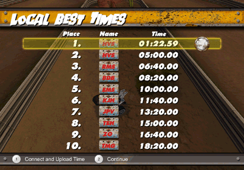
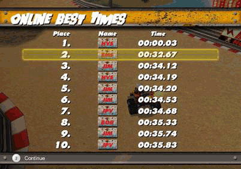

12 |
Time Trial (contre-la-montre) |
 |
Choisissez un circuit et tentez de battre votre propre record du tour. Lorsque vous obtenez un temps au tour qui vous satisfait, mettez le jeu en pause et abandonnez la course. Lorsque vous abandonnez, les nouveaux meilleurs temps sont ajoutés à votre classement des meilleurs temps. Vous avez la possibilité de les télécharger en ligne pour les partager avec les autres joueurs sur les Classements en ligne via la connexion Wi-Fi.
Choix du circuit – avant de participer à une course contre-la-montre, vous pouvez choisir le circuit sur lequel jouer. Pilotez autant de tours que vous le souhaitez, puis mettez le jeu en pause et sauvegardez les meilleurs temps.
Classements local et en ligne Prêt à affronter le monde, à montrer vos meilleurs temps aux autres pilotes dans le monde ? Vous pouvez enregistrer jusqu'à 10 records pour chaque circuit en local. Vos nouveaux temps sont automatiquement sauvegardés lorsque vous abandonnez une course contre-la-montre. Lorsque vous battez votre record, vous pouvez vous connecter aux classements en ligne pour le télécharger et voir comment vous vous situez.
Dans l'écran Local Best Times (Meilleurs temps en local), vous pouvez voir vos meilleurs temps sur le circuit actuellement choisi. Si vous voulez télécharger votre meilleur temps en ligne, suivez les instructions données à l'écran. Si l'icone est grisé, c'est que votre temps n'a pas encore été téléchargé. L'icone est clair si le temps a été téléchargé, mais même si vous n'avez pas obtenu un nouveau record, vous pouvez tout de même vous connecter pour voir votre classement.

 |
 |
 |
 |